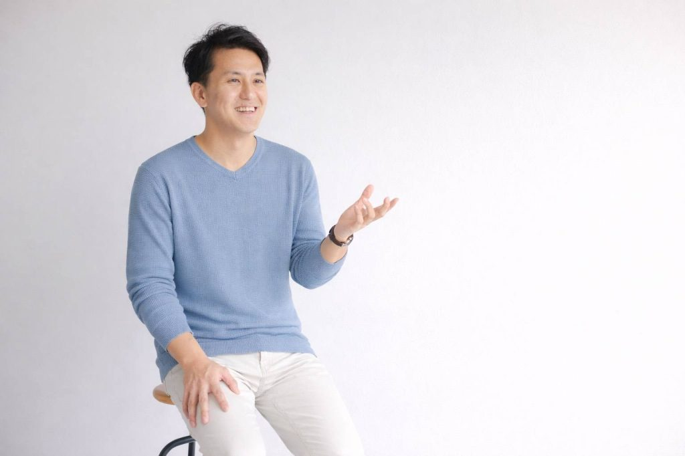
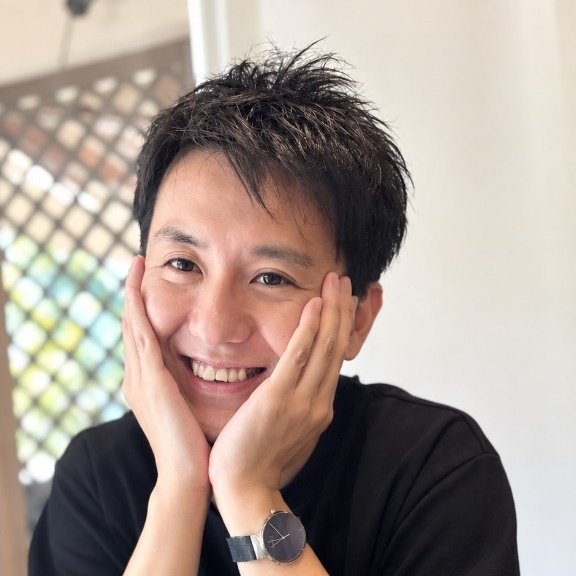
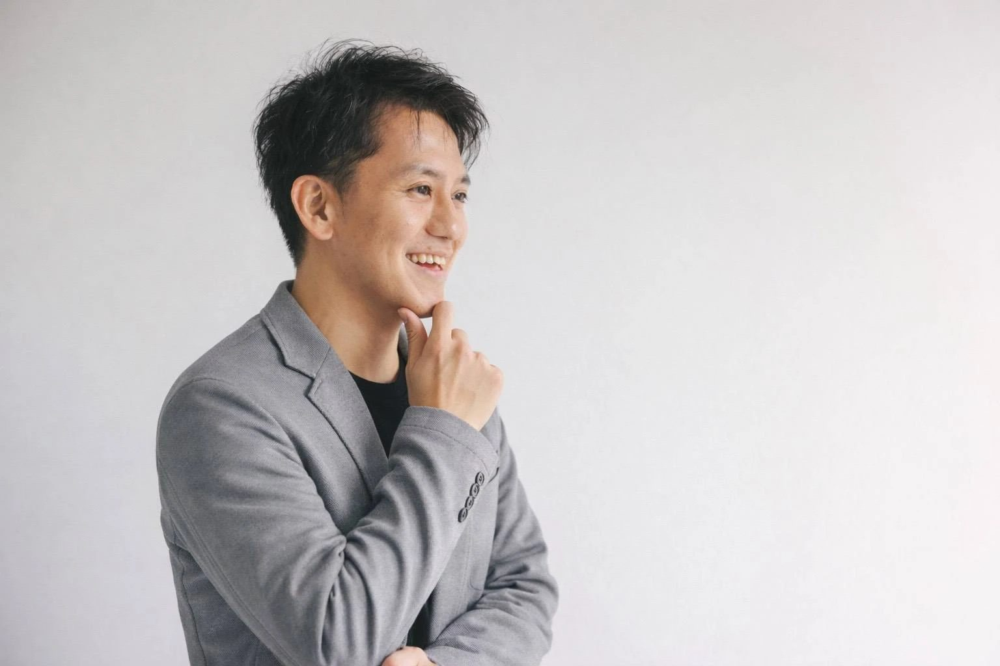

ご感想の見出しが入ります
ここに受講者さまのご感想が入ります。現在、ご感想を準備しています。公開まで今しばらくお待ちください。
もう、ひとりで抱え込まなくて大丈夫。
あなた自身の笑顔と人生を、
ここからもう一度動かしませんか？

毎朝、布団から起きてこない子どもの背中を見つめながら、
そんな不安で頭がいっぱいになり、胸が押しつぶされそうになっていませんか。
学校のこと、勉強の遅れ、友達関係、そして子どもの将来。
朝から晩まで、気づけば子どものことばかりを考えている。
夜遅くまでスマホを握りしめ、ネットの情報を検索し、本を何冊も読みあさり、いろんな人の話を必死に聞いて……。
そんなふうに、出口の見えない暗闇の中で、たったひとりで答えを探し続けてきたのではないでしょうか。
どれだけ本を読んでも、どれだけ子どものために尽くしても、なぜか心が晴れない。
それは、あなたの愛情が足りないからでも、がんばりが足りないからでもありません。
「子どもを変えよう」と
必死になりすぎていたこと。
そんな思い込みやプレッシャーに縛られ、あなた自身が息苦しくなっていませんでしたか？
子どものケアを最優先にして、自分の気持ちや、自分の時間、自分の人生をずっと後回しにしてきませんでしたか？
もしかしたら、最初に変えるべきなのは、
子どもではないのかもしれません。
誤解しないでくださいね。
「親がもっとがんばらなきゃいけない」と責めているわけではありません。
「親が変われば、子どもも変わる」という安易な話がしたいわけでもありません。
僕が心から伝えたいのは、

講師はじめまして、ひら先生です。
不登校になった。学校に行けなくなった。
そのとき、まるで目の前が真っ暗になって「人生が終わってしまった」かのように感じる親御さんは少なくありません。
学校に行くことは人生のゴールではありません。
子どもが幸せになるための、道のりの１つです。
子どもの不登校をきっかけに、親が立ち止まり、これまでの人生や本当に大切にしたいことを見つめ直す。
そして、その背中を見た子どもたちが、自ら荷物を背負い、自分の足で壁を越えていく。
そんな未来を、僕はあなたと一緒につくりたいのです。
講座に込めた想いを、ひら先生ご本人の声で
お届けします。
動画は現在準備中です。
公開まで、もう少しお待ちください。
だからこそ、この講座では「子どもをどう変えるか」は一切考えません。向き合うのは、あなた自身です。
3ヶ月かけてじっくりと見つめるのは、
「私は、これからどう生きたいのか？」
という問いです。
自分の気持ちを知り、自分を縛っていた思い込みに気づき、本当に大切にしたい価値観を思い出す。親として、そして一人の人間としての「自分の軸」を取り戻していきます。
親が元気になり、心にふっと余白が生まれると、目の前の景色がガラリと変わります。
子どもの一挙手一投足に振り回されていた自分が、一段高いところから、あたたかいまなざしで子どもを見守れるようになる。必要なときにはそっと手を差し伸べ、必要でないときには信じて見守る。
子どもの荒れた言葉や涙も、感情でぶつかり合うのではなく、大きな器で受け止められるようになるのです。
これまでの自分と向き合い、「私なら大丈夫」「この子なら大丈夫」という愛・自信・誇りの土台を取り戻します。
「学校には行くべき」といった当たり前や思い込みを解きほぐし、自由な選択肢を広げていきます。
わたしたちを育んできた学校教育のこれまでとこれからを考え、あたりまえを疑います。
子どもを変えようとするのを手放し、愛と感謝を軸に親子のつながりをあたたかく再構築します。
「どんな親でありたいか」「どんな人間として生きたいか」、誰の正解でもない自分だけの答えを見つけます。
子どもの人生に同化するのをやめ、あなた自身の人生をもう一度動かしていきます。
講座の学びをあなたの状況に合わせ、全体では話しきれない悩みや想いも含めてじっくり個別にお話しできる特別な時間です。
朝、子どもが起きてこない。
以前のあなたなら、不安と焦りで胸が張り裂けそうになっていたはずです。
でも、3ヶ月後のあなたはどうでしょう。
子どもが「今日も休む」と言ったとき、あなたは優しく笑って、
「そっか。今日はどう過ごす？」と、穏やかに声をかけてあげています。
子どものことだけで頭がいっぱいだった毎日から、少しずつ自分の時間を取り戻している。
「私は今日、何がしたいかな？」と、自分に問いかけられる日々。
ある日、リビングで子どもと何気ないテレビをみて、ゲラゲラ笑っている。
そのふとした瞬間に、ハッと気づくのです。
「あれ？私、最近すごく笑ってるな」
子どもが学校に行ったから笑えているのではありません。
あなた自身が元気を取り戻したから、世界の見え方が変わったのです。
もし子どもがまだ学校に行っていなかったとしても、「私なら大丈夫。この子なら大丈夫」──そう心から信じて、どっしりと構えていられる。
そんなあなたの背中を見て、ある日子どもがぽつりと言うかもしれません。
「ねえママ、そのとき、胸の奥からじわっとあたたかい涙がこぼれ、「私、自分の人生を楽しめるようになったんだ」と実感するはずです。
あなたとお子さんの「新しい笑顔」を、
ここから一緒に。
ここに受講者さまのご感想が入ります。現在、ご感想を準備しています。公開まで今しばらくお待ちください。
ここに受講者さまのご感想が入ります。現在、ご感想を準備しています。公開まで今しばらくお待ちください。
ここに受講者さまのご感想が入ります。現在、ご感想を準備しています。公開まで今しばらくお待ちください。
受講者さまのご感想は、現在準備中です。
ひとつでも当てはまったら、
それは立ち止まっていいサインです。

今はまだ、先が見えなくて不安かもしれません。
でも、あきらめないでください。
「不登校と向き合ったからこそ、
今の私がある」
「あの時間があったからこそ、
子どもと本当の信頼でつながれた」
「あのつらい経験があったからこそ、
自分の人生を取り戻せた」
心からそう言える日は、必ずやってきます。
子どものために自分を置き去りにしてきた優しいあなたへ。
もう、誰かの顔色を伺ったり、世間の「正解」に自分を合わせたりするのは終わりにしませんか？
子どもを変えるための3ヶ月ではありません。
あなた自身が、自分の人生の主役に戻るための3ヶ月です。
はい、お顔を出してのご参加をお願いしています。
お互いに顔が見えることで、参加者同士が安心して本音を共有できるあたたかい場をつくりたいためです。リラックスした普段着でご参加ください。
はい、アーカイブ（録画）配信をご用意しております。
当日リアルタイムでのご参加が難しい場合や、後から何度も復習したい場合もご安心ください。受講期間中はいつでもお好きなタイミングで動画をご視聴いただけます。
はい、どなたでもご参加いただけます。
小学生から高校生まで、また「行き渋り」の初期から「長期の不登校」まで、お子さんの年齢や状況を問わず歓迎いたします。
現在、次回の募集に向けて準備中です。日程が決まり次第、公式LINE等でお知らせいたします。
お支払い方法は、次回募集の開始時にお申込みページでご案内いたします。
はい、不登校・登校しぶりのお子さんを支えている方であれば、どなたでもご参加いただけます。
※定員に達し次第、予告なく受付を終了する場合がございます。
あなたの勇気ある一歩を、
心よりお待ちしています。